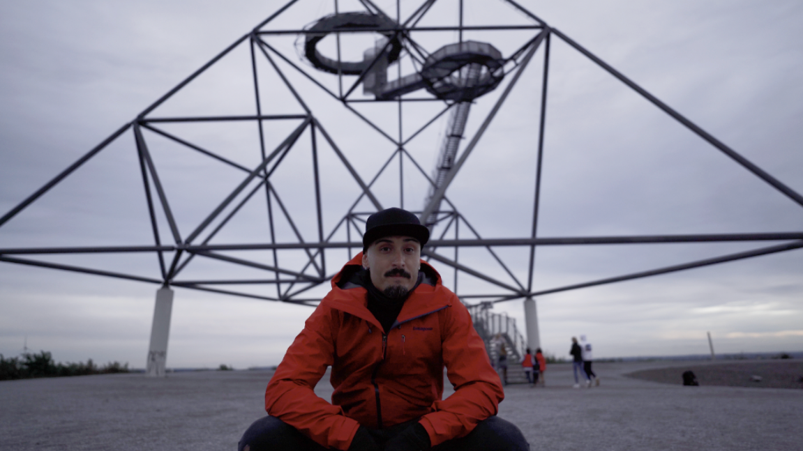
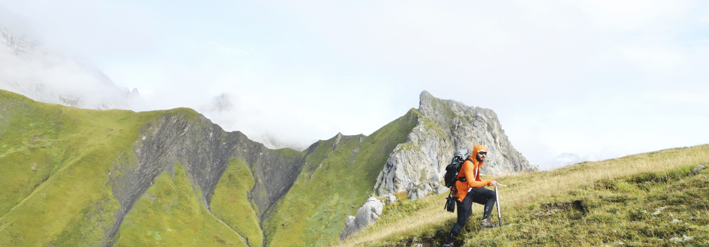
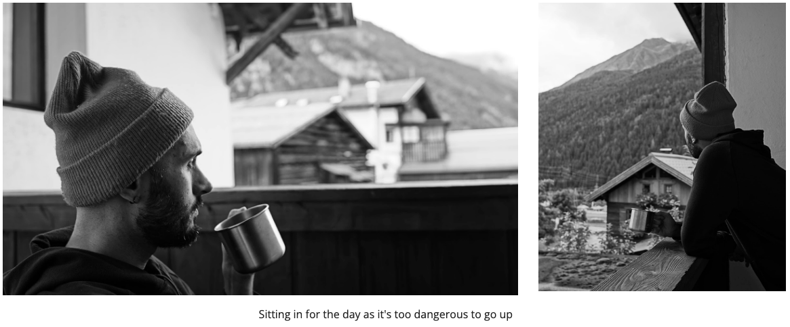
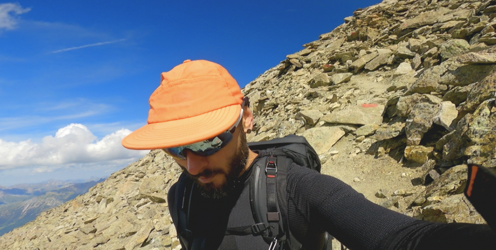

04 : Lifestyle
Exploration
I love to explore, no matter the place, country, or atmosphere. In my opinion, there is a little magic to every place. Every interaction and every moment in time. While I prefer mountains and dense forests over cities, I'm a city boy at heart. To me, 'Exploration' can mean anything—from places to new teachings, a new cup of coffee, or a new being to interact with. A new experience = wisdom. The more you explore, the more you evolve.
The Netherlands 🇳🇱
This is at the world-famous "Kinderdijk".

Matterhorn Switzerland 🇨🇭
This is my first time at the very famous Matterhorn.
Germany 🇩🇪
Secret Location
Mountaineering
The other big love of my life which is indescribable. Being alone in the mountains/nature, the wind, the sun, the elements around you. There is a deep mist floating over the mountain, no visibility over 100 meters, everything is shown as shadows. There is a quiet vibe and everything feels at peace. You hear some sounds that you can't place. And they are getting closer. You wonder what it is, all of a sudden the sound is near and the shadows start to unveil through the mist. It's a group of Reindeer, the leader of the pack stares at you and stands firmly on your path until the rest of the pack passes. He checks the group and gives you that last look before he follows them. Or the Brown Bear that you meet in the middle of a Valley and hope you will survive and act accordingly. These are all actions that made me the man I am today.
Tyrol 🇦🇹 Reflecting and Planning

Sitting in for the day is not that bad. Imagine being stuck on a mountain and all the things that could happen and all the costs.
A good value/asset to posses is to be able to look ahead of time. Evaluate each action.
Tyrol 🇦🇹 My first time at 3.400m 🏔️
It was a very satisfying day and very beautiful as I made friends at 3.000m and had beautiful views. And it all was possible because I waited the day before and did not rush. The evening before I had enough time to re do my planning and this is the result of it. It took me 7.5 hours in total to go up and down the same day.